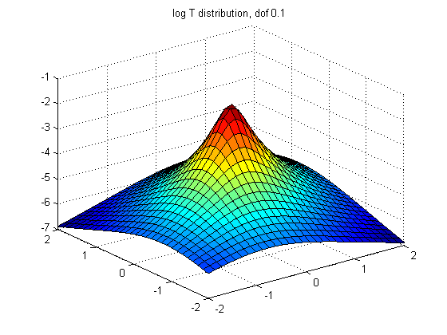
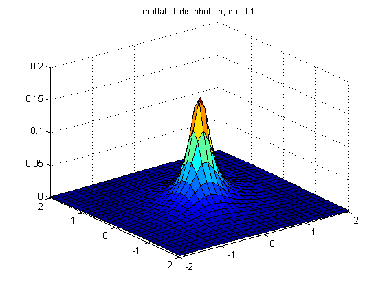
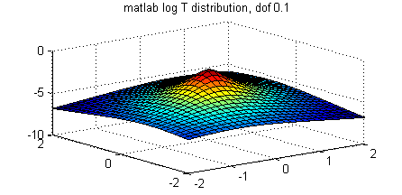
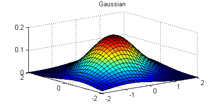
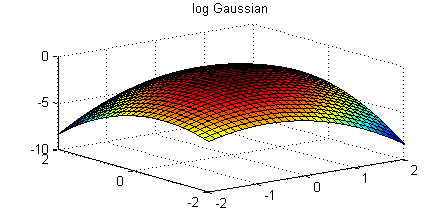

[X1,X2] = meshgrid(linspace(-2,2,30)',linspace(-2,2,30)');
n = size(X1,1);
X = [X1(:) X2(:)];
C = [1 .4; .4 1];
df = 0.1;
figure;
model.mu = [0 0]; model.Sigma = C; model.dof = df;
p = exp(studentLogprob(model, X));
surf(X1,X2,reshape(p,n,n));
title(sprintf('T distribution, dof %3.1f', df))
figure;
logp = studentLogprob(model, X);
surf(X1,X2,reshape(logp,n,n));
title(sprintf('log T distribution, dof %3.1f', df))
if statsToolboxInstalled
figure;
p = mvtpdf(X,C,df);
surf(X1,X2,reshape(p,n,n));
title(sprintf('matlab T distribution, dof %3.1f', df))
figure;
logp = log(mvtpdf(X,C,df));
surf(X1,X2,reshape(logp,n,n));
title(sprintf('matlab log T distribution, dof %3.1f', df))
end
figure;
p = gausspdf(X, [0 0], C);
surf(X1,X2,reshape(p,n,n));
title(sprintf('Gaussian'))
figure;
model.mu = [0 0];
model.Sigma = C;
logp = gaussLogprob(model, X);
surf(X1,X2,reshape(logp,n,n));
title(sprintf('log Gaussian'))
placeFigures
ans =
1 4 7
2 5 -1
3 6 -1
    